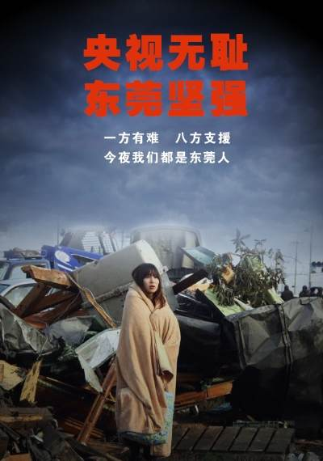

Conversation with 81184027 at Mon 10 Feb 2014 06:27:05 PM CST on 154115835 (webqq)
(06:26:57 PM) 机器猫--锅巴: 你知道谁最怕卖淫合法化吗？
一是土匪地霸，没得吃霸王娼了。
二是场所老鸨，妓女都个体营业了。
三是警察地痞，收不到非法经营保护费了。
(06:26:57 PM) 机器猫--锅巴: 你知道谁最怕卖淫合法化吗？
一是土匪地霸，没得吃霸王娼了。
二是场所老鸨，妓女都个体营业了。
三是警察地痞，收不到非法经营保护费了。
(06:28:18 PM) 光: 其实我认为，妓女其实也可以当选人大代表
(06:28:45 PM) 光: 这样比较能真实的体现人民民主专政的思想
(06:30:07 PM) 光: 有了妓女代表，可能政治还会清明不少
(06:30:29 PM) 光: 反腐还会更加彻底一些
(06:56:13 PM) 佳明: 
(06:57:26 PM) 机器猫--锅巴: 高
(07:44:09 PM) 埃及无雪: 哈哈哈:憨笑:
(08:54:38 PM) 光: 人民日报：练太极拳与做人
阙邦火
2005年08月30日09:02 【字号 大 中 小】【留言】【论坛】【打印】【关闭】
前不久，在中国太极网的《拳艺交流》论坛上看到一副对联：
立定脚跟竖起脊
拓开眼界放平心
这副对联原为“立定脚跟撑起脊，展开眼界放平心”，出自清代文学家梁章钜的《楹联丛话》。当代太极名家、武式太极拳第五代传人乔松茂很喜欢这副对联，拿去请恩师李锦藩为他书写。李公书写时，将上联的“撑”字改为“竖”，将下联的“展”字改为“拓”。一字之改，神韵大不相同。“撑起脊”是被动的撑架，勉强的支撑；“竖起脊”则是主动的竖立，是刚正之气的自我体现。“展开眼界”是讲将眼界放宽放远，意思挺好，但较平淡；“拓开眼界”则不仅包含了将眼界放宽放远之意，而且还蕴含了开拓进取之精神。
太极拳家们喜欢这副对联是有其特殊理由的。从太极拳技的角度看，这副对联包含了四个方面极为重要的练习要领。“立定脚跟”，是讲步型步法，强调重心要稳。太极拳法讲虚实，讲松紧，其实质都是为了“稳”。“竖起脊”，是讲身法，强调立身中正。古拳谱中要求做到“立如平准”，身体不可随意前俯后仰、左右歪斜。“开拓眼界”说的是眼法。眼是神之所在，练拳要头容端正，眼随势走，发劲时要打哪儿看哪儿，忌低头垂眼甚至闭眼。“放平心”讲的是心法。太极拳既是武术，又是气功，是内外兼修的健身方法，习练时要求神敛意静、心平气和，这是练好太极拳的大前提，从预备动作开始，就要先把心平静下来。
由此想到练拳与做人同理，首忌轻浮，重一个“稳”字，立场要稳定，言行要稳重；又忌歪邪，要行正道，挺直脊梁，刚正不阿；再忌目光短小，宜心胸开阔，眼光远大；更忌心态失衡，当求一颗善良、平和的心。这副对联，把练拳的要领与做人的准则结合得天衣无缝。若把拳理拳法之要求运用于日常的人格品性修养，修炼出一颗不图名利的平常心、豁达大度的宽容心、无烦无忧的轻松心和积极健康的乐观心，有了这样一种好心态，就会笑对人生了。
《人民日报》 (2005年08月30日 第八版)
(08:54:50 PM) 光: http://opinion.people.com.cn/GB/40604/3652969.html